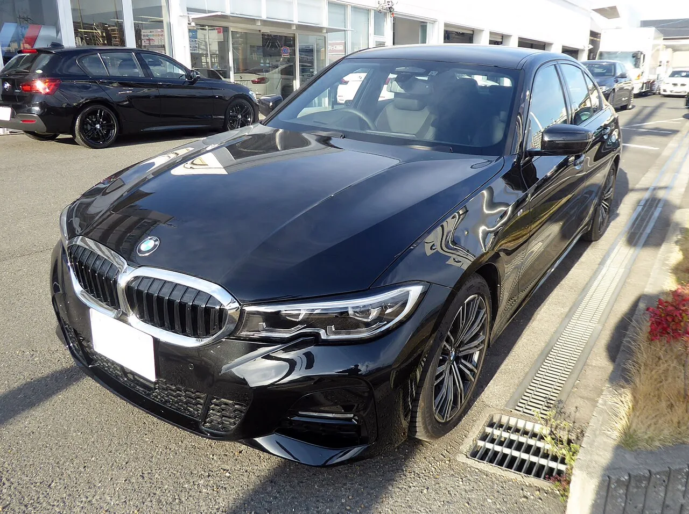
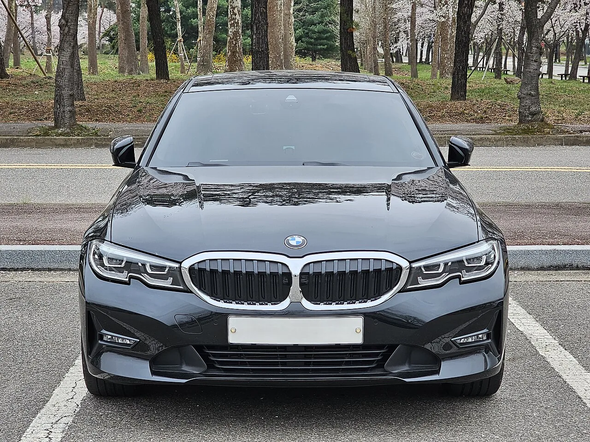
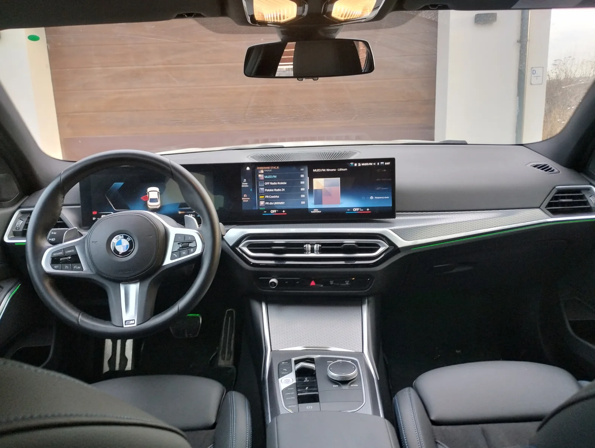
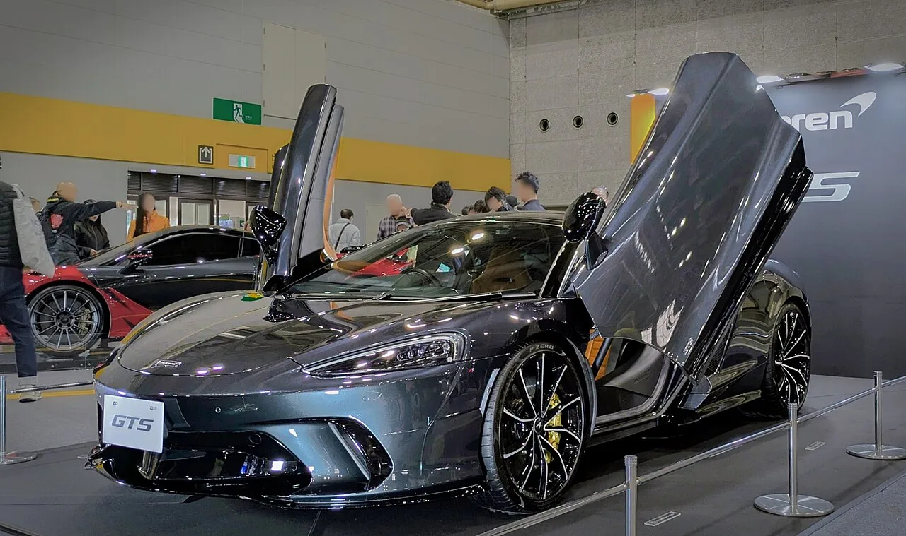
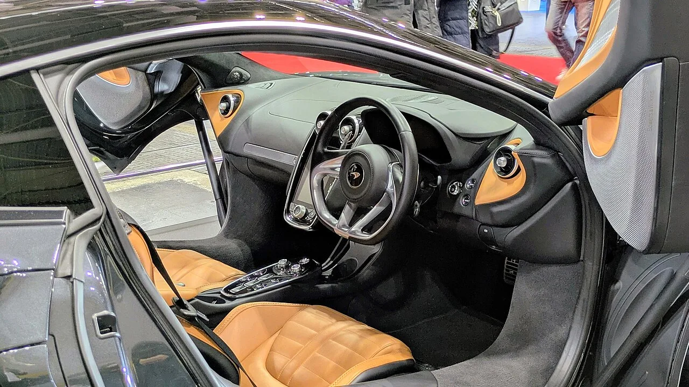

▲ 사진은 현행 8세대 이전 3시리즈(G20)다. 2027년형 완전변경 모델(G50)은 노이어클라쎄 디자인 언어를 입고 공개될 예정이다 ⓒ Tokumeigakarinoaoshima, Wikimedia Commons (CC BY-SA 4.0)
"전기 모델과 연소 모델을 구분하기 어려울 것이다." BMW 디자인 총괄이 차세대 3시리즈를 두고 남긴 말이다. 완전변경을 앞둔 BMW의 베스트셀러 세단과, 라인업을 대대적으로 재편 중인 맥라렌이 나란히 2027년 데뷔를 예고하고 나섰다. 하나는 '패밀리카의 정석'으로 불리는 스포츠 세단이고, 다른 하나는 F1의 유산을 잇는 순혈 슈퍼카다. 성격은 정반대지만, 두 브랜드 모두 2027년을 기점으로 브랜드의 얼굴을 새로 그리려 한다는 공통점이 있다. BMW블로그(BMW Blog)와 모터원(Motor1), 오토블로그(Autoblog) 등 외신 보도를 종합해 두 차종의 예고 내용을 정리했다.
1. BMW 3시리즈(G50) — 노이어클라쎄를 입은 첫 내연기관 세단

▲ 역시 현행 G20 모델이다. 2027년형 G50은 이 차체 비례에서 벗어나 노이어클라쎄 콘셉트에 가까운 신규 플랫폼 위에 올라선다 ⓒ Wikimedia Commons 사용자 제공 (CC BY-SA 4.0)
BMW블로그에 따르면 8세대 3시리즈, 코드명 'G50'은 2023년 공개된 비전 노이어클라쎄 콘셉트의 디자인 언어를 양산차 최초로 세단에 적용하는 모델이다. 좌우로 넓게 퍼진 키드니 그릴이 슬림한 헤드램프와 수평으로 이어지고, 측면은 플러시 도어 핸들과 간결한 캐릭터 라인으로 정리된다. 후면부 역시 얇고 수평으로 뻗은 테일램프가 특징이다. BMW 디자인팀 내부에서는 전기차 i3(NA0 플랫폼)와 외관상 구분이 어려울 정도로 디자인 언어를 통일했다는 평가가 나온다.
다만 일부 스파이샷에서는 예상보다 절제된 스타일링도 포착됐다는 후속 보도도 있다. BMW블로그는 최근 목격된 프로토타입을 근거로 "과도하게 큰 그릴 대신 현행 디자인의 흔적을 일부 남긴 온건한 진화형일 가능성"도 함께 제기했다. 즉 콘셉트카 수준의 파격보다는, 노이어클라쎄의 조형 언어를 3시리즈급 세단에 맞게 다듬은 절충안이 유력하다는 것이다.

▲ 현행(G20) 3시리즈의 실내다. G50 역시 커브드 디스플레이 구성은 이어가되, 노이어클라쎄 콘셉트에 가까운 미니멀한 센터페시아로 다듬어질 전망이다 ⓒ Michał Derela, Wikimedia Commons (CC BY-SA 4.0)
2. BMW 3시리즈 파워트레인 — 수동변속기의 시대는 끝난다
BMW블로그와 오토블로그의 보도를 종합하면 G50은 318, 320, M350 세 가지 라인업으로 우선 출시된다. 엔진 라인업의 중심은 개선된 2.0L 4기통 터보 'B48TÜ3'로, 반응성과 효율을 함께 끌어올린 최신 세대 유닛이다. 여기에 48V 마일드 하이브리드 시스템이 전 라인업에 기본 적용돼 유로7 배기 규제 대응과 발진 가속력 향상을 동시에 노린다. 오토블로그가 입수한 내부 문건에 따르면, 플러그인하이브리드 '330e'도 2027년 7월 양산에 돌입할 예정이며 기존 세대 대비 출력이 한층 높아질 전망이다.
고성능 모델은 이름부터 달라진다. M340i의 후속은 'M350'으로 명명될 가능성이 유력하며, BMW USA 사이트에 관련 트림명이 잠시 노출되며 이 소식이 사실상 기정사실화됐다. M350에는 직렬 6기통 'B58' 엔진과 쿼드 배기 시스템이 적용돼 M 퍼포먼스 모델임을 시각적으로도 드러낼 예정이다. 다만 어떤 라인업에도 수동변속기는 배정되지 않는다. E21부터 이어져 온 3시리즈의 수동변속기 전통은 G50 세대에서 완전히 막을 내리고, 8단 ZF 자동변속기로 통일된다.
BMW블로그에 따르면 G50의 생산은 2026년 11월 독일 징골핑 공장에서 시작되며, 정식 판매는 2027년부터다. 모터원이 입수한 티저 이미지에는 M 퍼포먼스 버전의 실루엣이 담겨 있어, 공개 초기부터 고성능 모델을 전면에 내세우려는 마케팅 전략도 엿보인다. 관련 소식은 BMW블로그 원문에서 계속 업데이트되고 있다. BMW블로그 원문 기사 바로가기
3. 맥라렌 — 아르투라 위에 서는 새 얼굴, 'P34'

▲ 사진은 아르투라가 아닌, GT의 후속으로 2024년 출시된 현행 맥라렌 GTS다. 2027년 예고된 신모델은 GTS가 아니라 아르투라 위에 새로 추가되는 하이브리드 슈퍼카 'P34'로, 기존 GT 라인업과는 별개 차종이다 ⓒ Aos.1905, Wikimedia Commons (CC BY-SA 4.0), 2025년 재팬 모빌리티쇼 간사이에서 촬영
소재를 취재하는 과정에서 확인할 부분이 있다. 흔히 '2027년형 맥라렌 GTS'로 알려진 소식의 실체는 GT 라인업의 완전변경이 아니라, 아르투라보다 상위에 새로 신설되는 하이브리드 슈퍼카 'P34'의 데뷔다. 맥라렌 GT의 후속 모델인 GTS는 이미 2023년 12월 공개돼 2024년 중반부터 판매 중이며, 동일 플랫폼에 경량화와 출력 상승(626마력)을 더한 모델이다. 즉 GTS 자체는 신차가 아니라 이미 시장에 나와 있는 현행 모델이다.
모터원이 딜러 대상 설명회 내용을 인용한 보도에 따르면, 맥라렌이 실제로 2027년 출시를 예고한 신차는 코드명 'P34'다. 아르투라보다 차체가 길고 아르투라와 750S 사이에 자리하는 포지셔닝으로, 맥라렌 F1의 조형 철학을 현대적으로 재해석한 2인승 슈퍼카로 개발되고 있다. 탄소섬유 모노코크 구조에 F1 레이스카처럼 좌석 등받이가 차체에 일체화된 형태, 신규 힌지식 도어, 3D 프린팅 서스펜션 부품 등이 특징으로 거론된다. 판매 가격은 3억원대 초반(31만 3,000달러 안팎)에서 형성될 것으로 전망되며, 맥라렌은 출시 첫 해에 1,000대 판매를 목표로 하는 것으로 알려졌다.

▲ P34의 기반이 되는 현행 맥라렌 아르투라. 671마력 트윈터보 V6 하이브리드를 쓰며, P34는 이 라인업 위에 새로 추가되는 상위 모델이다 ⓒ Calreyn88, Wikimedia Commons (CC BY-SA 4.0)
4. 맥라렌 P34 파워트레인 — V6에서 V8 하이브리드로 방향 전환

▲ 역시 현행 GTS의 실내다. P34는 F1 레이스카에서 영감을 받은 일체형 시트백 등 완전히 다른 캐빈 구성을 예고하고 있다 ⓒ Aos.1905, Wikimedia Commons (CC BY-SA 4.0)
파워트레인 구성을 두고는 외신 간 보도가 다소 엇갈린다. 아르투라의 트윈터보 V6 하이브리드 계보를 잇는다는 보도가 있는 한편, AOL/오토블로그가 인용한 딜러 브리핑에서는 맥라렌이 자체 개발한 V8 엔진에 새로운 하이브리드 시스템을 결합한다는 내용도 나왔다. 이 하이브리드 시스템은 현재 아르투라에 쓰이는 유닛보다 70% 가볍고, 변속기에 직접 동력을 전달하는 방식이어서 응답성이 한층 빨라질 것으로 기대된다. 결합 출력은 800마력 안팎, 토크는 약 800파운드피트(1,085Nm) 수준으로 거론된다. 정확한 엔진 형식은 정식 공개 전까지 유동적일 가능성이 크지만, 아르투라보다 확실히 상위 포지션의 플래그십이라는 방향성만큼은 외신 다수가 일치한다.
맥라렌의 로드맵은 P34에서 끝나지 않는다. 모터원이 딜러 설명회 내용을 인용한 추가 보도에 따르면, 맥라렌은 2028년 코드명 'P47'로 불리는 브랜드 최초의 SUV를 예고했다. 4도어 5인승 구조에 V8 하이브리드 파워트레인을 얹고, 포르쉐 카이엔 터보 GT보다 큰 차체에 24인치 대구경 휠을 두른 스포티한 실루엣으로 개발되고 있다는 것이다. 맥라렌은 이런 방식으로 2028년까지 매년 신차를 하나씩 투입하는 공격적인 제품 전략을 추진 중이며, P34는 '아르투라-P34-P47 SUV'로 이어지는 새로운 3단 포트폴리오 확장의 중심에 서는 모델이 될 전망이다. 관련 소식은 모터원 원문에서 확인할 수 있다. 모터원 원문 기사 바로가기
5. 왜 지금인가 — 두 브랜드의 서로 다른 2027년 승부수
BMW와 맥라렌이 같은 해 완전변경·신차를 예고한 배경은 서로 다르다. BMW에게 3시리즈는 브랜드 볼륨의 중심축이다. 세단 수요가 SUV에 밀리는 상황에서도 3시리즈는 BMW의 정체성을 상징하는 차종으로, 노이어클라쎄 디자인 언어를 가장 먼저 대중적인 세단에 이식함으로써 "전동화 시대에도 BMW다움은 변하지 않는다"는 메시지를 시장에 던지려는 의도로 읽힌다. 실제로 BMW블로그는 2027년 한 해 동안 G50 3시리즈를 포함해 X7, iX1 등 다수의 신차·완전변경 모델이 쏟아질 것이라 전하고 있어, 3시리즈는 그 신호탄 격이다.
반면 맥라렌의 P34는 '수성'이 아니라 '확장'의 성격이 짙다. 아르투라 한 차종으로는 페라리, 람보르기니의 다양한 라인업에 맞서기 부족하다는 판단 아래, 상위 슈퍼카·GT·SUV까지 포트폴리오를 전방위로 넓히는 전략의 첫 결과물이 P34다. F1의 헤리티지를 정면으로 소환한 디자인 철학은 맥라렌이 순혈 스포츠카 브랜드로서의 상징성을 재확인하려는 의도로 볼 수 있다.
6. 경쟁 구도는 어떻게 바뀌나
G50 3시리즈의 경쟁 상대는 여전히 메르세데스-벤츠 C클래스와 아우디 A4(신형 A5)다. 다만 세 모델 모두 비슷한 시기에 마일드 하이브리드 중심의 파워트레인 전환과 디지털 콕핏 강화를 예고하고 있어, 2027년을 전후로 독일 프리미엄 콤팩트 세단 3파전은 '디자인 언어의 통일성'과 '전동화 완성도' 싸움으로 옮겨갈 가능성이 크다.
P34의 경쟁 구도는 한층 명확하다. 페라리 296 GTB, 람보르기니 테메라리오 등 최근 잇따라 등장한 V6·V8 하이브리드 슈퍼카들이 직접적인 경쟁 상대가 된다. 이들 모델 모두 800마력 안팎의 결합 출력과 순수전기 주행 모드를 갖추고 있어, P34 역시 이 체급의 표준 스펙에 맞춰 개발되고 있다는 분석이 나온다. 여기에 더해 아르투라 자체도 계속 판매되는 만큼, 맥라렌은 사실상 자사 라인업 내에서도 아르투라와 P34 사이의 포지셔닝을 명확히 구분해야 하는 과제를 안고 있다.
7. 국내 출시 전망은?
3시리즈는 국내에서 꾸준히 판매되는 BMW의 스테디셀러인 만큼, G50 역시 글로벌 출시 이후 1년 안팎의 시차를 두고 국내 상륙이 유력하다. 다만 지금까지의 패턴을 볼 때 초기 도입 라인업은 320i·330i급 가솔린 모델 위주가 될 가능성이 크고, M350과 330e 같은 고성능·PHEV 모델은 다소 늦게 순차 투입될 것으로 예상된다. 국내 수입차 시장에서 3시리즈가 여전히 준중형 세단의 기준점 역할을 하고 있는 만큼, 완전변경 소식에 대한 국내 소비자들의 관심도 상당할 전망이다.
맥라렌 P34의 국내 출시 여부는 불확실하다. 맥라렌은 한국에 공식 딜러망을 운영하고 있지만, 판매 대수 자체가 많지 않은 소량 생산 브랜드다. 아르투라와 750S 등 현행 라인업도 국내에 정식 출시돼 있는 만큼, P34 역시 글로벌 출시 이후 국내 도입 가능성은 열려 있지만, 연간 배정 물량이 극소수에 그칠 가능성이 크다. 두 브랜드의 2027년 신차 소식은 앞으로도 추가 스파이샷과 공식 티저를 통해 조금씩 구체화될 전망이며, 카프리즘도 관련 소식을 지속적으로 전할 예정이다.